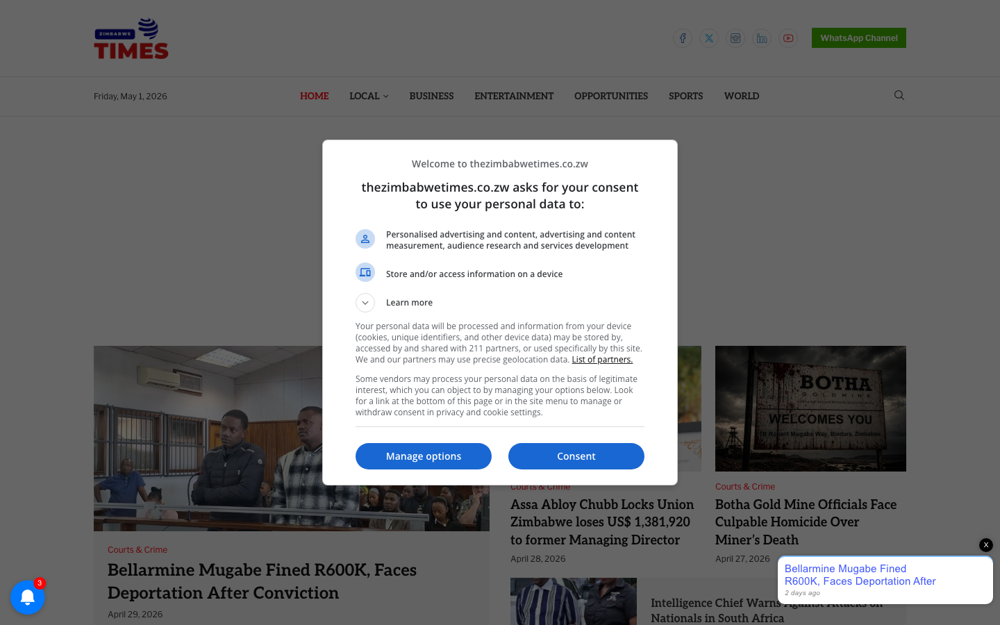

Overview
| Domain | thezimbabwetimes.co.zw |
|---|---|
| Category | news |
| Sector tags | media |
| Theme | soledad |
| Tranco rank | — |
| WP detection score | 78 / 100 |
| WP version | — |
| CDN | — |
| IP | 185.146.167.202 |
| Homepage size | 824 KB |
| Verified at | 2026-05-01T12:37:10.241540+00:00 |
Hosting fingerprint
| Host panel | unknown |
|---|---|
| Server header | Apache |
| TLS cert issuer | — |
| Reverse PTR | — |
no positive panel signals
Plugins detected (8)
WordPress signals
| Signal | Weight |
|---|---|
| wp_json_valid | +25 |
| wp_content_path | +15 |
| wp_includes_path | +15 |
| rss_wp_generator | +10 |
| readme_html_wp | +8 |
| plugin_path | +5 |
| theme_path | +5 |
| wp_body_class | +5 |
Discovery sources
| Source | Hint |
|---|---|
| cc-cdx | CC-MAIN-2026-17 |